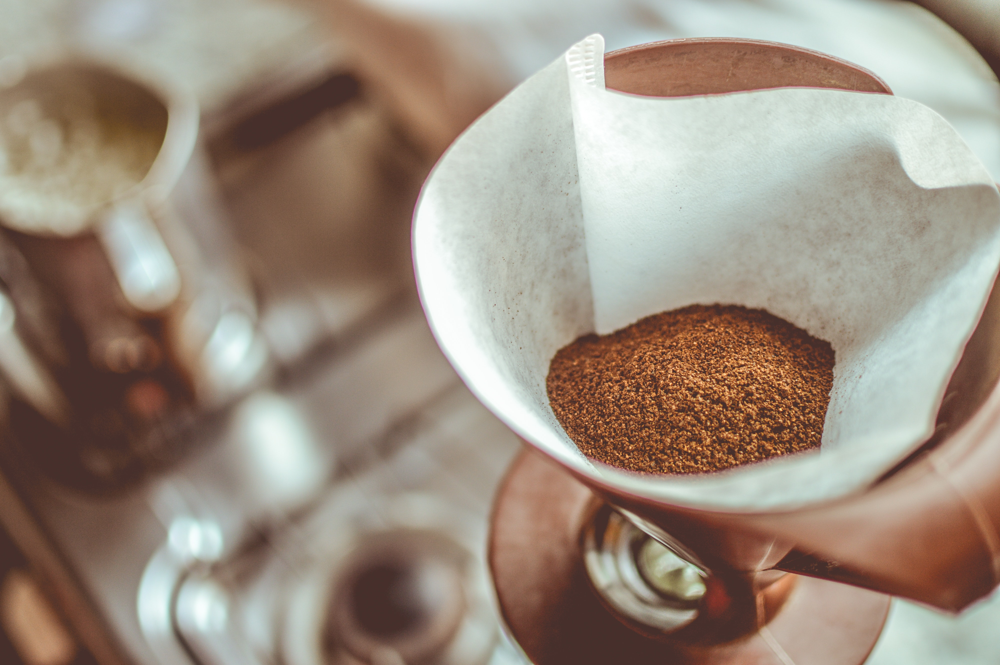

Let's face it. Throwing some coffee grounds into a filter, pouring some water in a reservoir, and pressing a button is a much easier way to make coffee than the methods I'm going to talk about. So why spend the extra time in the morning? By avoiding an electric coffee maker, you can have a much more flavorful cup of coffee and have much more control over that cup.
Using methods to brew your coffee aside from the coffee maker you probably already have can result in a much more flavorful, heavier bodied coffee. Electric coffee makers are quick, but this means that the brew time is short, which results in extracting less flavor from your coffee grounds. Coffee from a coffee maker can still be good, but is certainly less vivid than other methods in terms of flavor.
Another thing is that you don't have much control over the coffee your coffee maker makes. There is a limited range of grind size that works well and you can't mess with brew times at all. One of the biggest advantages about using something like a pour over or aeropress to brew your coffee is that you have more choices in terms of the grind of your coffee and how long you choose to brew, which can change the types of flavors you bring out of your coffee.
My 3 favorite methods to brew coffee are the pour over, french press, and aeropress. There are methods aside from these that produce excellent coffee, but these are the ones I'm going to explain. There are pros and cons to each of them and reasons you'd pick one over the other.